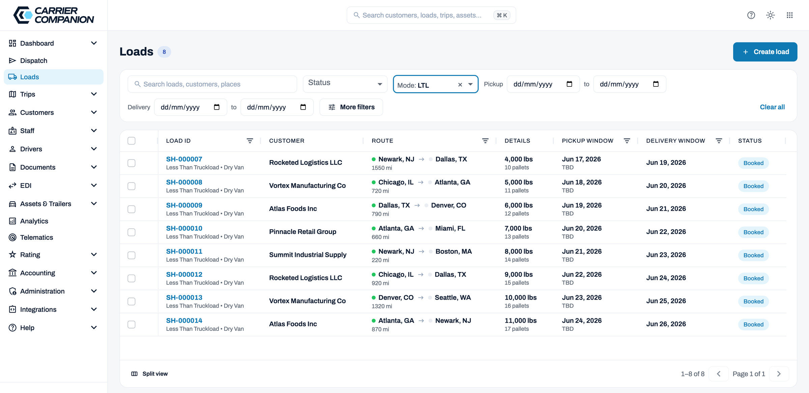
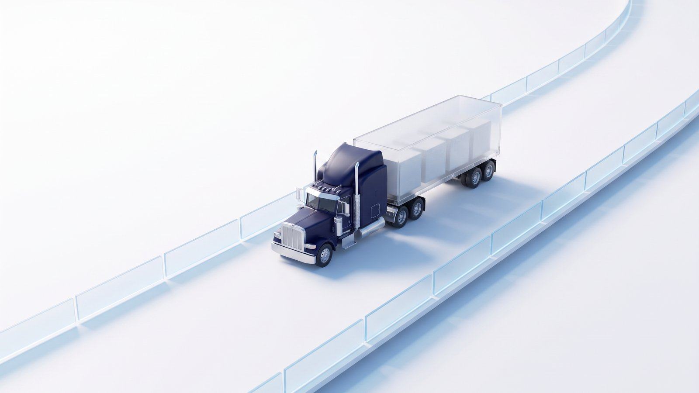
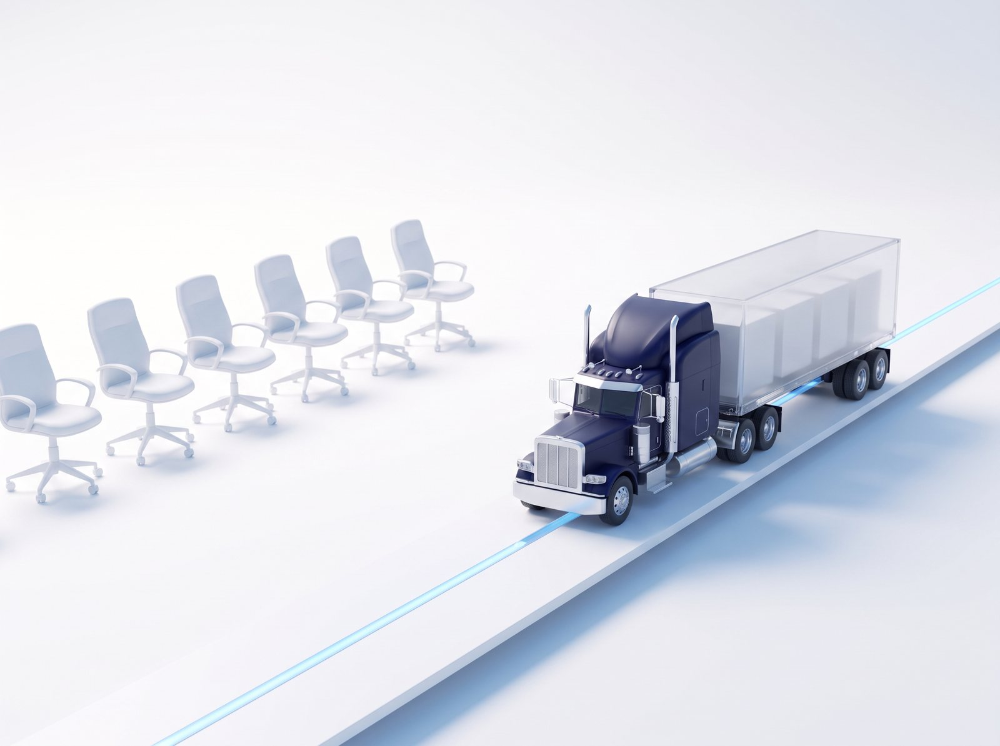

One platform for the people who run the fleet.
Simple on the surface. Deep where you need it.
Three things sit under everything in Carrier Companion. Loads, trips, and drivers. Loads build into trips. Trips land on drivers. It's built for how the fleet office already works.

Know before it's asked.
The first screen after login is every live asset on a map, with breadcrumb trails, ELD pings, fuel and asset condition. Business-health numbers and a live-events feed you program yourself sit alongside it. The customer calls, and the answer is already on the screen.
Assign the day in one pass.
A drag-and-drop calendar for planning a driver's week, with the same data in a list and on a map. The system checks linear footage before two loads share a trailer, pulls trucks from the right terminal, and keeps a record of every change.
From the quote to the invoice.
Set your rates ahead of time, by lane, weight and equipment, truckload or LTL. When a customer books or a broker asks, the load lands on your board already priced. The POD attaches to the load, the invoice comes out of the same record, and driver pay settles from it too.
The tools you already run, connected.
ELDs, telematics, mileage tools and your customers' EDI, connected from inside the platform with the help text right there. No systems admin. No vendor ticket.
One app in the cab.
Trips show up on the driver's phone. Pickups, deliveries, photos and signed PODs flow back to your board and attach to the load as invoice backup.
Guardrails, built in.
Custom roles from granular permissions. Credentials and endorsements that block a bad assignment before it happens. An audit trail behind every change.

Priced by the trip, not by the seat.
Add a dispatcher, add a planner, add the office manager. The price follows the loads you run, not the people who log in.

See the whole day before it comes to you.
Come up and see. Thirty minutes. Your lanes on the screen.